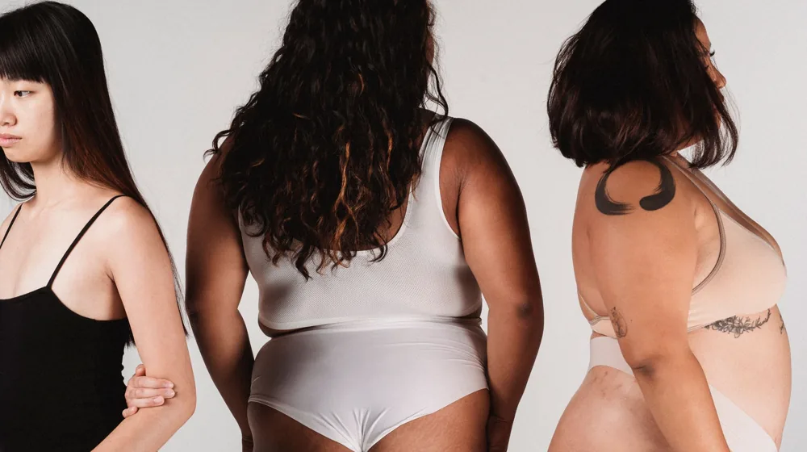

태양인? 소양인? 내 체질은 뭘까? 사상체질 진단 체크리스트 가이드
사진: Roberto Hund / Pexels (무료 이미지, 출처 표기)
사상체질, 왜 알아야 할까요?

자신의 몸과 마음을 더 깊이 이해하고 싶으신가요? 사상체질은 이제마 선생의 『동의수세보원』에 기반한 한국 한의학의 독자적인 체질 분류법입니다. 사람을 태양인, 태음인, 소양인, 소음인 네 가지 유형으로 나누어 각 체질의 생리적 특징, 성격, 그리고 발생하기 쉬운 질병까지 파악할 수 있도록 돕습니다. 내 체질을 알면 건강 관리법, 식단, 생활 습관 등을 자신에게 맞춰 조절하는 데 실질적인 도움을 받을 수 있습니다.
이 글에서는 각 사상체질의 주요 특징을 살펴보고, 자가 진단 체크리스트를 통해 자신의 체질을 가늠해볼 수 있는 방법을 안내합니다. 또한 자가 진단의 한계점과 전문가의 도움을 받아야 할 때까지 자세히 설명해 드립니다.
사상체질별 핵심 특징 한눈에 보기
각 체질은 특정 장기의 기능이 강하거나 약한 특징을 가지며, 이는 외모, 성격, 심지어 건강 문제까지 영향을 미칩니다. 2026년 10월 기준으로 알려진 각 체질의 일반적인 특징은 다음과 같습니다.
사상체질 자가 진단 체크리스트 활용법
위 표의 특징들을 참고하여 자신의 체질을 가늠해볼 수 있습니다. 다음은 자가 진단을 위한 몇 가지 체크포인트입니다. 각 항목을 읽고 자신에게 해당한다고 생각하는 문항에 표시해 보세요.
- 외형적 특징: 자신의 체격 중 특히 발달하거나 약한 부위가 있는지 객관적으로 평가합니다. (예: 어깨가 넓고 가슴이 발달했는지, 하체가 유독 약한지 등)
- 성격/심리: 주변 사람들이 나를 어떻게 평가하는지, 혹은 스스로 생각하는 자신의 핵심 성격은 무엇인지 떠올려봅니다. (예: 추진력이 강한지, 매사에 신중한지 등)
- 평소 건강 문제: 자주 겪는 질환이나 건강상의 불편함이 특정 체질의 유의점과 일치하는지 확인합니다. (예: 소화가 잘 안 되고 손발이 찬지, 쉽게 살이 찌는지 등)
- 생활 습관 선호도: 어떤 음식이나 환경이 자신에게 잘 맞거나 불편하게 느껴지는지 생각해봅니다. (예: 시원한 음식을 선호하는지, 따뜻한 곳을 좋아하는지 등)
각 항목에서 가장 많이 해당하는 체질이 자신의 사상체질일 가능성이 높습니다. 하지만 이 체크리스트는 어디까지나 참고용이며, 개인의 주관적 판단이 개입될 수 있습니다.
자가 진단의 한계와 전문가의 도움
사상체질 자가 진단은 자신의 건강에 대한 흥미를 유발하고 대략적인 방향을 잡는 데 유용합니다. 하지만 한계점도 분명합니다.
- 객관성 부족: 스스로를 평가할 때 주관적인 판단이나 희망사항이 반영될 수 있습니다.
- 복합 체질: 명확히 한 체질에 속하지 않고 여러 체질의 특징을 동시에 가지는 사람도 많습니다.
- 세밀한 진단 불가능: 단순히 몇 가지 특징만으로는 체내 장부의 허실(虛實)과 정확한 건강 상태를 파악하기 어렵습니다.
따라서 정확한 사상체질 진단과 이에 맞는 맞춤형 건강 관리가 필요하다면, 반드시 한의원에 방문하여 한의사의 진찰을 받는 것이 중요합니다. 한의사는 전문적인 문진, 망진(望診), 문진(聞診), 절진(切診) 등을 통해 정밀하게 체질을 파악하고, 개인에게 가장 적합한 치료법이나 생활 습관 개선 방안을 제시해 줄 수 있습니다.
내 체질에 맞는 생활 습관 가이드
자신의 체질을 이해하는 것은 건강한 삶을 위한 첫걸음입니다. 비록 자가 진단으로 대략적인 체질을 알게 되었더라도, 그 지식을 바탕으로 자신에게 맞는 생활 습관을 찾아보는 것이 중요합니다. 예를 들어, 태음인은 활동량을 늘리고 소화하기 쉬운 음식을 섭취하는 것이 좋으며, 소음인은 몸을 따뜻하게 하고 스트레스를 관리하는 데 집중해야 합니다.
이러한 정보는 일반적인 가이드라인이며, 특정 질환을 앓고 있거나 특별한 건강 상태라면 반드시 전문가와 상의하여 자신에게 맞는 방법을 찾는 것이 가장 안전하고 효과적입니다. 정확한 사항은 공식 한의학 기관이나 전문가에게 다시 확인하시길 권장합니다.
🔗 이 글도 함께 보면 좋아요: 종택 숙박, 후회 없는 선택을 위한 5가지 체크리스트
관련 추천 상품
사상체질 진단 키트, 체질별 맞춤 식단 관련 인기 상품 보러가기
이 포스팅은 쿠팡 파트너스 활동의 일환으로, 이에 따른 일정액의 수수료를 제공받습니다.